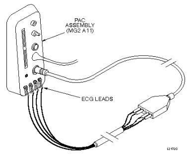
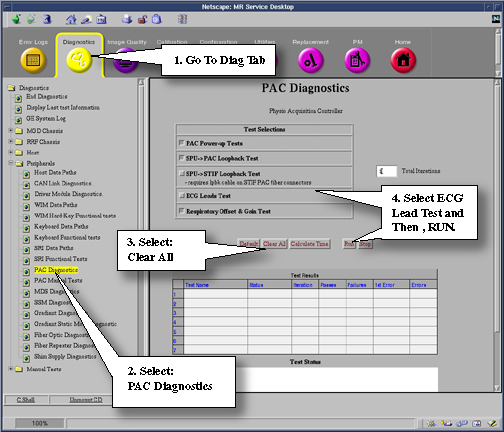

Operating Documentation
Direction 5440001-3, Rev# 6
Signa HDxt Service Methods
Module Version 1.0, Version Date 5/3/07
Operating Documentation |
| Required Persons | Preliminary Reqs | Procedure | Finalization |
|---|---|---|---|
| 1 | Not Applicable | 15 mins | Not Applicable |
All the of the ECG clip leads are connected together. The right leg (RL) lead supplies a +2.5Vdc drive signal to the right arm (RA), left arm (LA), and left leg (LL) leads. The signal from each of these leads is read and checked to ensure that their respective inputs to the ECG A/D converter are in the +2.5V ± 200mv range. If any of them are not in this range, an error message is entered in the message log. If the signals from the RA, LA, and LL leads are all out of range, it is assumed that the RL lead has failed.
Connect the cardiac gating lead to the Physical Acquisition Controller (PAC) Assembly as shown in Illustration 1. Connect the clip leads to the test points on the PAC (the test points are all shorted together). The clips leads are color-coded: Red is LL, White is RA, Black is LA, and Green is RL.
Illustration 1: PAC-II ASSEMBLY WITH ECG LEADS CONNECTED

Refer to Illustration 2 for starting [ECG Lead Test].
Illustration 2: Starting PAC Diagnostics

The test takes about 30 seconds. If any lead fails, an error message indicating the faulty lead is reported in the [Test Results] Screen.
Click on [Stop] to exit the Diagnostics window. The TPS will reset upon exit.
Put the system back in patient scanning condition.
Do a check scan to insure the system is operating properly.